5. 法国大革命期间的通货膨胀#
5.1. 概览#
本讲座描述了 [Sargent and Velde, 1995] 中所写的法国大革命（1789-1799）期间的一些货币和财政特征。
为了筹资公共开支和偿还债务，法国政府实验一系列政策。
这些政策的设计者对政府货币和财政政策如何影响经济结果有一定的理论认识。
他们所依据的一些理论至今仍然具有重要意义:
税收平滑模型，例如罗伯特·巴罗提出的 [Barro, 1979]
这种规范性（即规定性）模式建议政府主要通过发行国债来为战时临时激增的支出提供资金，并增加税收来偿还战争期间发行的额外债务；然后，在战争结束后，将政府在战争期间积累的债务展期；并在战争结束后永久性地增加税收，增加的税收正好足够支付战后政府债务的利息。
不愉快的货币主义方程类似于本讲中描述的方程 一些不愉快的货币主义算术
在 1789 年之前的几十年里，涉及复利的数学支配着法国政府的动态债务；据历史学家称，这种计算方式为法国大革命奠定了基础。
关于政府公开市场操作的影响的真实票据理论，其中政府用持有的有价值房地产或金融资产来支持新发行的纸币，纸币持有者可以用他们的钱从政府购买这些资产。
革命者们从亚当·斯密于1776年出版的《国富论》[Smith, 2010] 和其他资料中了解到这一理论
它塑造了革命者在1789年到1791年之间针对一种名为 指券（assignats） 的纸币的发行方式
经典的 金本位 或 银本位
拿破仑·波拿巴于1799年成为法国政府首脑。他使用这一理论来指导他的货币和财政政策
经典的 通货膨胀税 理论，其中货币主义价格水平理论中研究的菲利普·凯根的货币需求([Cagan, 1956]) 是一个核心部分
这一理论有助于解释1794年至1797年的法国价格水平和货币供应数据
实际余额需求的 法律限制 或 金融抑制 理论
公共安全委员会的十二个成员，他们在恐怖时期即1793年6月至1794年7月当权，使用了这一理论来塑造他们的货币政策
我们使用 matplotlib 复现 [Sargent and Velde, 1995] 中用来描述这些实验结果的几个图表
5.2. 数据来源#
本讲使用了 [Sargent and Velde, 1995] 中汇编的三个表格中的数据：
import numpy as np
import pandas as pd
import matplotlib.pyplot as plt
from io import BytesIO
import requests
plt.rcParams.update({'font.size': 12})
import matplotlib as mpl
FONTPATH = "fonts/SourceHanSerifSC-SemiBold.otf"
mpl.font_manager.fontManager.addfont(FONTPATH)
plt.rcParams['font.family'] = ['Source Han Serif SC']
base_url = 'https://github.com/QuantEcon/data-lectures/raw/'\
+ 'main/lectures/'
fig_3_url = f'{base_url}fig_3.xlsx'
dette_url = f'{base_url}dette.xlsx'
assignat_url = f'{base_url}assignat.xlsx'
5.3. 政府开支与税收#
我们将使用 matplotlib 构建一些展示重要历史背景的图表。
我们将复现 [Sargent and Velde, 1995] 中的一些关键图表。这些图表揭示了十八世纪期间一些有趣的现象：
在四次大规模战争期间，法国和英国的政府开支都出现了大幅增长，且增长幅度相近
英国在和平时期的税收基本能够满足政府开支需求，但战时税收远低于开支水平
而法国的情况更为严峻 - 即便在和平时期，税收收入也远远无法覆盖政府开支
# 从Excel文件读取数据
data2 = pd.read_excel(dette_url,
sheet_name='Militspe', usecols='M:X',
skiprows=7, nrows=102, header=None)
# 法国军事开支，1685-1789年，以1726年的里弗尔计
data4 = pd.read_excel(dette_url,
sheet_name='Militspe', usecols='D',
skiprows=3, nrows=105, header=None).squeeze()
years = range(1685, 1790)
plt.figure()
plt.plot(years, data4, '*-', linewidth=0.8)
plt.plot(range(1689, 1791), data2.iloc[:, 4], linewidth=0.8)
plt.gca().spines['top'].set_visible(False)
plt.gca().spines['right'].set_visible(False)
plt.gca().tick_params(labelsize=12)
plt.xlim([1689, 1790])
plt.xlabel('*：法国')
plt.ylabel('百万里弗')
plt.ylim([0, 475])
plt.tight_layout()
plt.show()
findfont: Failed to find font weight normal, now using 600.
{kind=link}
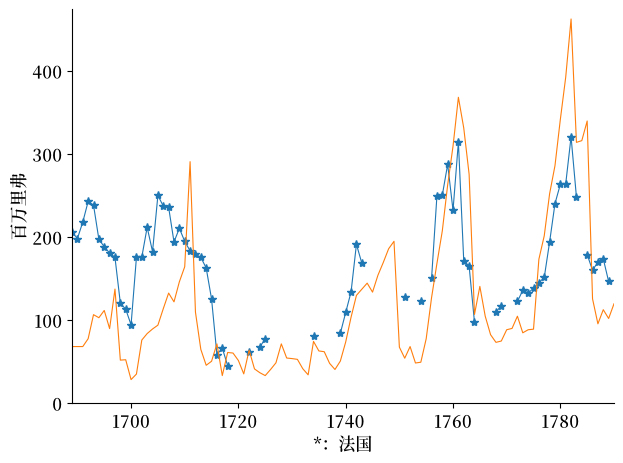
Fig. 5.1 法国和英国的财政支出#
18 世纪，英国和法国进行了四次大规模战争。
英国赢得了前三场战争，输掉了第四场战争。
每次战争都导致两国政府支出激增，国家必须以某种方式为这些支出提供资金。
图Fig. 5.1显示了法国（蓝色）和英国在这四场战争中军费开支的激增。
图Fig. 5.1的一个显著特点是，尽管英国的人口不到法国的一半，但其军费开支却与法国差不多。
这证明英国已经建立了能够维持高税收、政府支出和政府借贷的国家机构。参见[North and Weingast, 1989]。
# 从Excel文件读取数据
data2 = pd.read_excel(dette_url, sheet_name='Militspe', usecols='M:X',
skiprows=7, nrows=102, header=None)
# 绘制数据
plt.figure()
plt.plot(range(1689, 1791), data2.iloc[:, 5], linewidth=0.8)
plt.plot(range(1689, 1791), data2.iloc[:, 11], linewidth=0.8, color='red')
plt.plot(range(1689, 1791), data2.iloc[:, 9], linewidth=0.8, color='orange')
plt.plot(range(1689, 1791), data2.iloc[:, 8], 'o-',
markerfacecolor='none', linewidth=0.8, color='purple')
# 自定义图表
plt.gca().spines['top'].set_visible(False)
plt.gca().spines['right'].set_visible(False)
plt.gca().tick_params(labelsize=12)
plt.xlim([1689, 1790])
plt.ylabel('百万磅', fontsize=12)
# 添加文本注释
plt.text(1765, 1.5, '民用', fontsize=10)
plt.text(1760, 4.2, '民用加偿债', fontsize=10)
plt.text(1708, 15.5, '总政府开支', fontsize=10)
plt.text(1759, 7.3, '税收', fontsize=10)
plt.tight_layout()
plt.show()
findfont: Failed to find font weight normal, now using 600.
{kind=link}
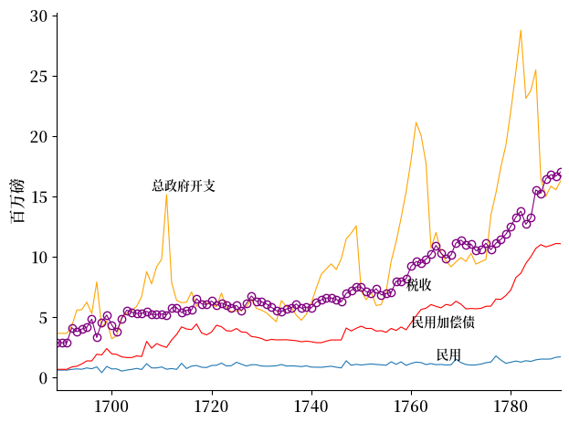
Fig. 5.2 英国的政府支出和税收收入#
图Fig. 5.2和Fig. 5.4总结了1789年法国大革命开始前一个世纪英国和法国政府的财政政策。
1789年之前，法国的进步力量非常欣赏英国为政府支出提供资金的方式，并希望重新设计法国的财政安排，使其更像英国。
图Fig. 5.2显示了政府支出及其在以下各项支出中的分配情况
民事（非军事）活动
偿债，例如支付利息
军事支出（黄线减去红线）
图Fig. 5.2还显示了政府从税收中获得的总收入（紫色圆圈线）
请注意，在这四场战争中，政府总支出的激增与军事支出的激增相关联
18 世纪初反对法国国王路易十四的战争
17 世纪 40 年代的奥地利王位继承战争
17 世纪 50 年代和 60 年代的法印战争
1775 年至 1783 年的美国独立战争
图Fig. 5.2显示
在和平时期，政府支出大致等于税收，债务偿还支出既不增长也不下降
战争期间，政府支出超过税收收入
政府通过发行债务为收支之间的赤字提供资金
战争结束后，政府的税收收入超过其非利息支出的部分恰好足以偿还政府为筹集早期赤字资金而发行的债务
因此，战后政府 并不会 大幅增税以偿清全部债务
相反，政府只会将其继承的债务展期，只增税到刚好能支付该债务利息的程度
因此，图Fig. 5.2中描绘的18世纪英国财政政策非常像罗伯特·巴罗 [Barro, 1979]等列举的有关税收平滑模型的例子。
该图的一个显著特点被我们称为税收与政府支出之间的 “重力法则”。
政府支出水平与税收水平相互吸引
虽然它们会暂时出现差异（战争期间就是如此），但当恢复和平时，它们又会变为相似水平。
接下来，我们会将 18 世纪英国和法国的偿债成本占政府收入比例的数据绘制成图。
# 从Excel文件读取数据
data1 = pd.read_excel(dette_url, sheet_name='Debt',
usecols='R:S', skiprows=5, nrows=99, header=None)
data1a = pd.read_excel(dette_url, sheet_name='Debt',
usecols='P', skiprows=89, nrows=15, header=None)
# 绘制数据
plt.figure()
plt.plot(range(1690, 1789), 100 * data1.iloc[:, 1], linewidth=0.8)
date = np.arange(1690, 1789)
index = (date < 1774) & (data1.iloc[:, 0] > 0)
plt.plot(date[index], 100 * data1[index].iloc[:, 0],
'*:', color='r', linewidth=0.8)
# 绘制附加数据
plt.plot(range(1774, 1789), 100 * data1a, '*:', color='orange')
# 标记数据
plt.gca().spines['top'].set_visible(False)
plt.gca().spines['right'].set_visible(False)
plt.gca().set_facecolor('white')
plt.gca().set_xlim([1688, 1788])
plt.ylabel('税收的百分比')
plt.tight_layout()
plt.show()
{kind=link}
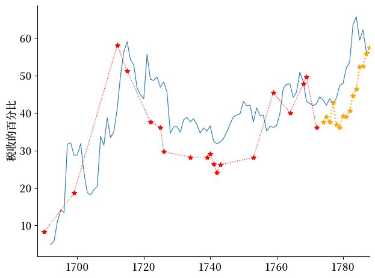
Fig. 5.3 英国和法国的偿债与税收比率#
图Fig. 5.3显示，在英国和法国，政府债务的利息支出（即所谓的 “还本付息”）占政府税收收入的比例都很高。
Fig. 5.2向我们展示了在和平时期，尽管利息支出巨大，英国仍然能够平衡预算。
但正如我们在下一张图中看到的，在1788年法国大革命前夕，在英国行之有效的财政重力法则在法国并不奏效。
# 从 Excel 文件中读取数据
data1 = pd.read_excel(fig_3_url, sheet_name='Sheet1',
usecols='C:F', skiprows=5, nrows=30, header=None)
data1.replace(0, np.nan, inplace=True)
| 2 | 3 | 4 | 5 | |
|---|---|---|---|---|
| 0 | 122.222210 | 211.111109 | 283.333330 | 499.999995 |
| 1 | 94.444435 | 183.333332 | 288.888886 | 416.666662 |
| 2 | NaN | NaN | NaN | NaN |
| 3 | NaN | NaN | NaN | NaN |
| 4 | NaN | NaN | 316.666664 | NaN |
| 5 | 127.777765 | 255.555553 | 311.111108 | 349.999997 |
| 6 | NaN | NaN | 322.222219 | NaN |
| 7 | NaN | NaN | 333.333330 | NaN |
| 8 | NaN | NaN | 299.999997 | NaN |
| 9 | 155.555540 | 244.444442 | 316.666664 | 355.555552 |
| 10 | 155.555540 | 261.111109 | 311.111108 | 377.777774 |
| 11 | NaN | NaN | NaN | NaN |
| 12 | NaN | NaN | NaN | NaN |
| 13 | 138.888875 | 261.111109 | 377.777774 | 388.888885 |
| 14 | NaN | NaN | 377.777774 | NaN |
| 15 | 144.444430 | 288.888886 | 372.222218 | 422.222218 |
| 16 | 149.999985 | 277.777775 | 372.222218 | 416.666662 |
| 17 | 144.444430 | 272.222219 | 383.333329 | 422.222218 |
| 18 | 166.666650 | 299.999997 | 383.333329 | 449.999996 |
| 19 | 149.999985 | 288.888886 | 405.555551 | 455.555551 |
| 20 | 149.999985 | 294.444441 | 422.222218 | 527.777772 |
| 21 | 166.666650 | 316.666664 | 427.777774 | 577.777772 |
| 22 | 177.777760 | 316.666664 | 427.777774 | 580.000000 |
| 23 | 183.333315 | 338.888886 | 438.888885 | 670.000000 |
| 24 | 205.555535 | 361.111108 | 461.111107 | 611.111105 |
| 25 | 211.111090 | 372.222218 | 466.666662 | NaN |
| 26 | 238.888865 | 405.555551 | 472.222217 | 583.333327 |
| 27 | 244.444420 | 411.111107 | 466.666662 | 572.222216 |
| 28 | 266.666640 | 433.333329 | 472.222217 | 605.555549 |
| 29 | 277.777750 | 461.111107 | 472.222217 | 638.888883 |
# 绘制数据
plt.figure()
plt.plot(range(1759, 1789, 1), data1.iloc[:, 0], '-x', linewidth=0.8)
plt.plot(range(1759, 1789, 1), data1.iloc[:, 1], '--*', linewidth=0.8)
plt.plot(range(1759, 1789, 1), data1.iloc[:, 2],
'-o', linewidth=0.8, markerfacecolor='none')
plt.plot(range(1759, 1789, 1), data1.iloc[:, 3], '-*', linewidth=0.8)
plt.text(1775, 610, '总开支', fontsize=10)
plt.text(1773, 325, '军用', fontsize=10)
plt.text(1773, 220, '民用加偿债', fontsize=10)
plt.text(1773, 80, '偿债', fontsize=10)
plt.text(1785, 500, '收入', fontsize=10)
plt.gca().spines['top'].set_visible(False)
plt.gca().spines['right'].set_visible(False)
plt.ylim([0, 700])
plt.ylabel('百万里弗')
plt.tight_layout()
plt.show()
{kind=link}
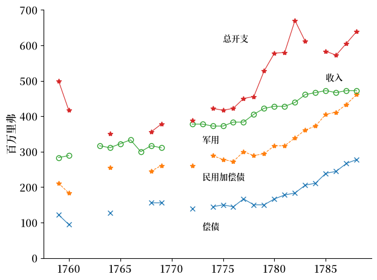
Fig. 5.4 法国的政府支出和税收收入#
Fig. 5.4显示，在1788年法国大革命前夕，政府支出超过了税收收入。
这种支出超过收入的情况在法国支持美国独立战争期间及之后尤为严重，主要是由于政府债务利息支出的持续增长。
这在一定程度上是本讲一些不愉快的货币主义算术中讨论的”令人不愉快的算术”背后债务动态演变的结果。
[Sargent and Velde, 1995]指出，统治法国至1788年的旧制度存在一些根深蒂固的制度特征，这些特征使政府难以实现预算平衡。
强大的既得利益集团阻止了政府通过以下任一方式来缩小其总支出与税收之间的差距：
增税，或
削减政府的非偿债（即非利息）支出，或
通过债务重组（即拖欠部分债务）来降低偿债（即利息）成本
先例和当时通行的法国安排使得三个利益群体有能力阻止对他们特别关心的政府预算约束部分进行调整
纳税人
政府支出的受益者
政府债权人（即政府债券持有人）
大约在1720年，法国政府在路易十四发动的战争使其陷入债务危机后，曾面临过类似的局面。当时政府牺牲了政府债权人的利益，即通过拖欠足够多的债务来降低利息支出，从而实现预算平衡。
不知何故，到了1789年，法国政府的债权人比1720年时更加强大。
因此，路易十六召集三级会议，要求他们重新设计法国宪法，以降低政府支出或增加税收，从而使他既能实现预算平衡，又能履行对法国政府债权人的承诺。
国王召集三级会议，旨在推动能够实现持续预算平衡的改革。
[Sargent and Velde, 1995]描述了法国革命者是如何着手实现这一目标的。
5.4. 国有化、私有化与债务削减#
1789年，革命者迅速将三级会议改组为国民议会。
首要任务是解决财政危机——也正是这场危机促使国王召集了三级会议。
革命者并非社会主义者或共产主义者。
恰恰相反，他们尊重私有财产，并掌握着当时最先进的经济学知识。
他们清楚地知道，要偿还政府债务，就必须增加新的收入或削减支出。
恰逢其时的是，天主教会拥有大量能产生收入的财产。
事实上，按照这些收入流的资本化价值估算，教会土地的价值与整个法国政府的债务规模大致相当。
这一巧合催生了一个偿还法国政府债务的三步计划：
将教会土地收归国有——即在不予补偿的情况下没收或征用这些土地
出售这些教会土地
用出售所得的收入来偿还乃至清偿法国政府债务
支撑这一计划的货币理论，源自亚当·斯密在其1776年出版的《国富论》[Smith, 2010]中对他所称的真实票据的分析，许多革命者都读过这本书。
亚当·斯密将真实票据定义为一种以生产性资本或存货等真实资产的债权作为担保的纸币。
国民议会制定了一套巧妙的制度安排来实施这一计划。
应天主教主教塔列朗（一位无神论者）的动议，国民议会没收并将教会土地收归国有。
国民议会打算用教会土地的收益来偿还其国家债务。
为此，议会开始实施一项”私有化计划”，使其能够在不增加税收的情况下偿还债务。
他们的计划是发行一种名为”指券”的纸币，持有者可凭其购买国有土地。
从某种意义上说，这些纸币将”和银币一样好”，因为二者都可以作为购买那些（曾属于教会的）土地的可接受支付手段。
因此，财政部长内克尔和国民议会的立宪派人士计划通过创造一种新货币，同时解决私有化问题和债务问题。
他们设计了一个方案，通过拍卖被没收的土地来筹集收入，从而收回以政府出售土地作担保而发行的纸币。
这一”以税收作担保的货币”方案，将国民议会带入了当时现代货币理论的领域。
辩论记录显示了国民议会成员如何运用理论和证据来评估他们这项创新可能产生的影响。
国民议会成员援引了大卫·休谟和亚当·斯密的观点
他们引用了约翰·劳1720年的体系以及十五年前美国使用纸币的经验，作为纸币方案可能出问题的例证
深知这些陷阱，他们着手加以避免
他们成功地维持了两三年。
但在那之后，法国卷入了一场大战，这场战争以彻底改变法国纸币性质的方式打乱了这一计划。[Sargent and Velde, 1995]描述了随后发生的事情。
5.5. 重塑税法与税收管理#
1789年，法国革命者组建了国民议会，着手重塑法国的财政政策。
他们希望偿还政府债务——法国政府债权人的利益在国民议会中得到了充分的代表。
但他们着手重塑法国的税法以及征税的行政机构。
他们废除了许多税种
他们废除了旧制度下的包税制
包税制意味着政府将征税工作私有化，雇佣私人——即所谓的包税人——来征税，同时让他们保留其中一部分作为服务报酬
伟大的化学家拉瓦锡也是一名包税人，这也是公共安全委员会在1794年将他送上断头台的原因之一
由于这些税收改革，政府税收收入下降了
下图展示了这一点
# 从Excel文件读取数据
data5 = pd.read_excel(dette_url, sheet_name='Debt', usecols='K',
skiprows=41, nrows=120, header=None)
# 绘制数据
plt.figure()
plt.plot(range(1726, 1846), data5.iloc[:, 0], linewidth=0.8)
plt.gca().spines['top'].set_visible(False)
plt.gca().spines['right'].set_visible(False)
plt.gca().set_facecolor('white')
plt.gca().tick_params(labelsize=12)
plt.xlim([1726, 1845])
plt.ylabel('1726 = 1', fontsize=12)
plt.tight_layout()
plt.show()
{kind=link}
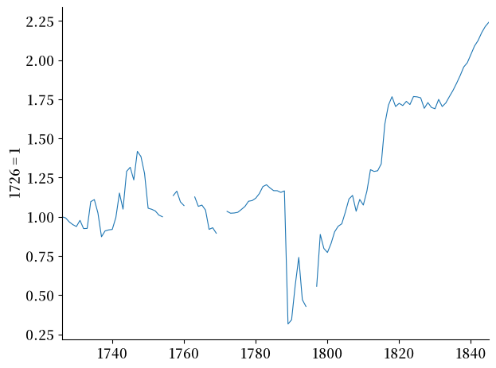
Fig. 5.5 法国人均实际收入指数#
根据 Fig. 5.5，人均税收收入直到1815年，拿破仑·波拿巴被流放到圣赫勒拿岛并且路易十八恢复法国王位后，才得以回升至在1789年之前的水平。
从1799年到1814年，拿破仑·波拿巴还有其他的收入来源——从他在战争中击败的省份和国家获得的战利品和赔款
从1789年到1799年，法国革命者转向另一种资源来源，以筹集资金支付政府购买的货物和服务，并偿还法国政府债务。
如下图所示，在1789至1799年期间，政府开支大幅超过税收收入。
# 从Excel文件读取数据
data11 = pd.read_excel(assignat_url, sheet_name='Budgets',
usecols='J:K', skiprows=22, nrows=52, header=None)
# 准备x轴数据
x_data = np.concatenate([
np.arange(1791, 1794 + 8/12, 1/12),
np.arange(1794 + 9/12, 1795 + 3/12, 1/12)
])
# 移除NaN数值
data11_clean = data11.dropna()
# 绘制数据
plt.figure()
h = plt.plot(x_data, data11_clean.values[:, 0], linewidth=0.8)
h = plt.plot(x_data, data11_clean.values[:, 1], '--', linewidth=0.8)
# 设置图表属性
plt.gca().spines['top'].set_visible(False)
plt.gca().spines['right'].set_visible(False)
plt.gca().set_facecolor('white')
plt.gca().tick_params(axis='both', which='major', labelsize=12)
plt.xlim([1791, 1795 + 3/12])
plt.xticks(np.arange(1791, 1796))
plt.yticks(np.arange(0, 201, 20))
# 设置y轴标签
plt.ylabel('百万里弗', fontsize=12)
plt.tight_layout()
plt.show()
{kind=link}
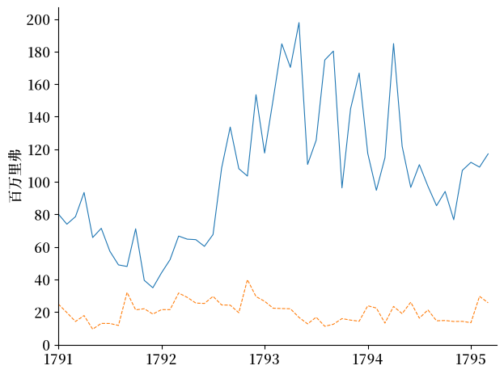
Fig. 5.6 支出（蓝色）和收入（橙色），（实际值）#
为了弥补 Fig. 5.6 中所揭示的政府支出与税收收入之间的差距，法国革命者印制了纸币并将其花费出去。
下图显示，通过印制货币，他们得以为大量的商品和服务购买提供资金，包括军需物资和士兵薪饷。
# 从Ｅxcel中读取数据
data12 = pd.read_excel(assignat_url, sheet_name='seignor',
usecols='F', skiprows=6, nrows=75, header=None).squeeze()
# 创建图表并绘制
plt.figure()
plt.plot(pd.date_range(start='1790', periods=len(data12), freq='ME'),
data12, linewidth=0.8)
plt.gca().spines['top'].set_visible(False)
plt.gca().spines['right'].set_visible(False)
plt.axhline(y=472.42/12, color='r', linestyle=':')
plt.xticks(ticks=pd.date_range(start='1790',
end='1796', freq='YS'), labels=range(1790, 1797))
plt.xlim(pd.Timestamp('1791'),
pd.Timestamp('1796-02') + pd.DateOffset(months=2))
plt.ylabel('百万里弗', fontsize=12)
plt.text(pd.Timestamp('1793-11'), 39.5, '1788年收入水平',
verticalalignment='top', fontsize=12)
plt.tight_layout()
plt.show()
{kind=link}
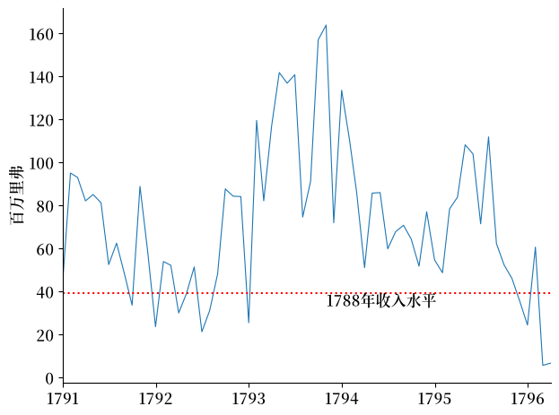
Fig. 5.7 印刷纸币带来的收入#
Fig. 5.7 将 1789 年至 1796 年印钞所得的收入与古代政权在 1788 年获得的税收收入进行了比较。
以商品衡量，在 \(t\) 时刻通过印制新钞所获得的收入等于
其中
\(M_t\) 是以里弗为单位的 在\(t\) 时间的纸币存量
\(p_t\) 是在\(t\) 时间每里弗的商品为单位的在 \(t\) 时间的价格水平
\(M_{t+1} - M_t\) 是 在\(t\) 时间内印制的新钞数量
注意 1793-1794 年间印钞收入的激增。
这反映了公共安全委员会为强迫公民接受纸币（否则将受到惩处）而采取的非常措施。
还要注意到 1797 年印钞收入的骤然下降，以及 1797 年之后再无相关观测数据。
这反映了利用印钞机筹集收入这一手段的终结。
法国纸币所赋予持有者的权利随时间发生了有趣的变化。
这些变化导致了随时间而异的结果，也体现了指导革命者货币政策决策的各种理论在实践中的具体展开。
下图展示了革命者使用纸币为其部分支出融资期间，法国的物价水平变化。
注意，由于价格水平上涨幅度巨大，我们在此使用对数刻度。
# 从Excel文件中读取数据
data7 = pd.read_excel(assignat_url, sheet_name='Data',
usecols='P:Q', skiprows=4, nrows=80, header=None)
data7a = pd.read_excel(assignat_url, sheet_name='Data',
usecols='L', skiprows=4, nrows=80, header=None)
# 创建图表并绘制
plt.figure()
x = np.arange(1789 + 10/12, 1796 + 5/12, 1/12)
h, = plt.plot(x, 1. / data7.iloc[:, 0], linestyle='--')
h, = plt.plot(x, 1. / data7.iloc[:, 1], color='r')
# 设置图表特征
plt.gca().tick_params(labelsize=12)
plt.yscale('log')
plt.xlim([1789 + 10/12, 1796 + 5/12])
plt.gca().spines['top'].set_visible(False)
plt.gca().spines['right'].set_visible(False)
# 加入竖线
plt.axvline(x=1793 + 6.5/12, linestyle='-', linewidth=0.8, color='orange')
plt.axvline(x=1794 + 6.5/12, linestyle='-', linewidth=0.8, color='purple')
# 加入文字
plt.text(1793.75, 120, '“恐怖时期”', fontsize=12)
plt.text(1795, 2.8, '价格水平', fontsize=12)
plt.text(1794.9, 40, '黄金', fontsize=12)
plt.tight_layout()
plt.show()
findfont: Failed to find font weight normal, now using 600.
{kind=link}
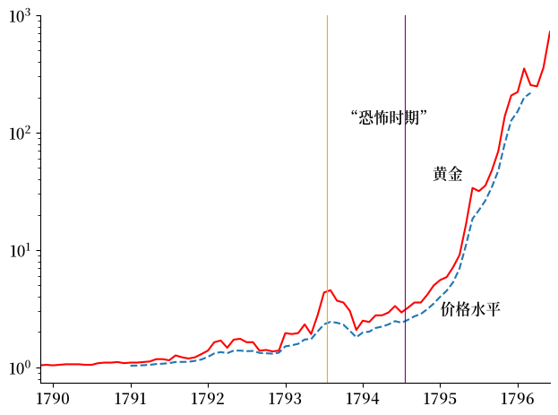
Fig. 5.8 价格水平和黄金价格（对数标度）#
我们将 Fig. 5.8 中的价格水平对数和 Fig. 5.9 中的实际余额 \(\frac{M_t}{p_t}\) 划分为三个时期,对应不同的货币实验或制度。
第一个时期持续到1793年夏末，特点是实际余额稳步增长，通货膨胀温和。
第二个时期从恐怖时期开始，也以恐怖时期结束。这一时期的特点是实际余额维持在较高水平，约为25亿里弗，价格相对稳定。罗伯斯庇尔在1794年7月下旬的垮台，标志着我们所讨论的第三个时期的开始。
第三个时期中，实际余额不断下降，价格快速上涨。
我们用以下不同的理论来解释这三个时期：
支持或真实票据理论（该理论的经典文献是亚当·斯密[Smith, 2010]）
法律限制理论（[Keynes, 1940]，[Bryant and Wallace, 1984]）
经典恶性通货膨胀理论（[Cagan, 1956]）
Note
根据[Cagan, 1956]采用的恶性通货膨胀的经验定义， 从通货膨胀率超过每月 50% 的月份开始，到通货膨胀率降至每月 50% 以下的月份结束，至少持续一年，指券 从 1795 年 5 月到 12 月经历了恶性通货膨胀。
我们并不将这些理论视为竞争对手，而是将其视为关于政府票据发行的“如果-那么”的集合，每个理论都有其更接近现实条件的地方—即更接近满足”如果“的地方。
# 从Excel文件中读取数据
data7 = pd.read_excel(assignat_url, sheet_name='Data',
usecols='P:Q', skiprows=4, nrows=80, header=None)
data7a = pd.read_excel(assignat_url, sheet_name='Data',
usecols='L', skiprows=4, nrows=80, header=None)
# 创建图表并绘制
plt.figure()
h = plt.plot(pd.date_range(start='1789-11-01', periods=len(data7), freq='ME'),
(data7a.values * [1, 1]) * data7.values, linewidth=1.)
plt.setp(h[1], linestyle='--', color='red')
plt.vlines([pd.Timestamp('1793-07-15'), pd.Timestamp('1793-07-15')],
0, 3000, linewidth=0.8, color='orange')
plt.vlines([pd.Timestamp('1794-07-15'), pd.Timestamp('1794-07-15')],
0, 3000, linewidth=0.8, color='purple')
plt.ylim([0, 3000])
# 设置图表属性
plt.gca().spines['top'].set_visible(False)
plt.gca().spines['right'].set_visible(False)
plt.gca().set_facecolor('white')
plt.gca().tick_params(labelsize=12)
plt.xlim(pd.Timestamp('1789-11-01'), pd.Timestamp('1796-06-01'))
plt.ylabel('百万里弗', fontsize=12)
# 添加文本注释
plt.text(pd.Timestamp('1793-09-01'), 200, '“恐怖时期”', fontsize=12)
plt.text(pd.Timestamp('1791-05-01'), 750, '黄金水平', fontsize=12)
plt.text(pd.Timestamp('1794-10-01'), 2500, '真实价值', fontsize=12)
plt.tight_layout()
plt.show()
{kind=link}
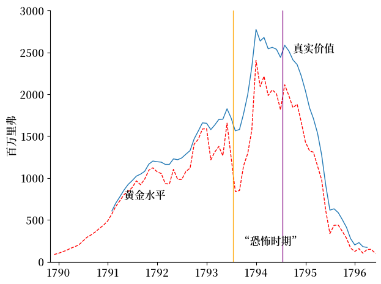
Fig. 5.9 转让的实际余额（用黄金和货币的形式）#
图Fig. 5.10中的三个聚集点描绘了不同的实际余额-通货膨胀关系。
只有第三个时期的点具有我们现在熟悉的二十世纪恶性通货膨胀的逆向关系。
时期 1：（“真实票据 时期）：1791 年 1 月至 1793 年 7 月
时期 2：（“恐怖时期”）：1793 年 8 月 - 1794 年 7 月
时期 3：（“经典凯根恶性通货膨胀”）：1794 年 8 月 - 1796 年 3 月
def fit(x, y):
b = np.cov(x, y)[0, 1] / np.var(x)
a = y.mean() - b * x.mean()
return a, b
# 加载数据
caron_response = requests.get(f'{base_url}caron.npy')
nom_balances_response = requests.get(f'{base_url}nom_balances.npy')
caron = np.load(BytesIO(caron_response.content))
nom_balances = np.load(BytesIO(nom_balances_response.content))
infl = np.concatenate(([np.nan],
-np.log(caron[1:63, 1] / caron[0:62, 1])))
bal = nom_balances[14:77, 1] * caron[:, 1] / 1000
# 分为三个时期将 y 对 x 进行回归
a1, b1 = fit(bal[1:31], infl[1:31])
a2, b2 = fit(bal[31:44], infl[31:44])
a3, b3 = fit(bal[44:63], infl[44:63])
# 分为三个时期将 x 对 y 进行回归
a1_rev, b1_rev = fit(infl[1:31], bal[1:31])
a2_rev, b2_rev = fit(infl[31:44], bal[31:44])
a3_rev, b3_rev = fit(infl[44:63], bal[44:63])
plt.figure()
plt.gca().spines['top'].set_visible(False)
plt.gca().spines['right'].set_visible(False)
# 第一个子样本
plt.plot(bal[1:31], infl[1:31], 'o', markerfacecolor='none',
color='blue', label='真实票据时期')
# 第二个子样本
plt.plot(bal[31:44], infl[31:44], '+', color='red', label='恐怖时期')
# 第三个子样本
plt.plot(bal[44:63], infl[44:63], '*',
color='orange', label='经典凯根恶性通货膨胀')
plt.xlabel('实际余额')
plt.ylabel('通货膨胀')
plt.legend()
plt.tight_layout()
plt.show()
{kind=link}
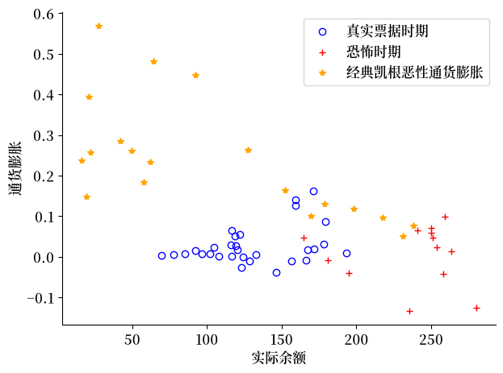
Fig. 5.10 通货膨胀与实际余额#
从 Fig. 5.10 中可以看出，三个不同时期的数据点呈现出截然不同的通货膨胀与实际余额之间的关系。
其中，只有第三个时期的数据点展现出了一个负相关关系 - 这与我们从20世纪的恶性通货膨胀案例中所熟悉的规律相符。
为了更清晰地展示这些关系，我们将使用线性回归绘制直线，以概括三个子时期通货膨胀与实际余额之间的关系。
在此之前，我们先剔除恐怖时期初期的一些观测值，然后得到下面的图。
# 分为三个时期将 y 对 x 进行回归
a1, b1 = fit(bal[1:31], infl[1:31])
a2, b2 = fit(bal[31:44], infl[31:44])
a3, b3 = fit(bal[44:63], infl[44:63])
# 分为三个时期将 x 对 y 进行回归
a1_rev, b1_rev = fit(infl[1:31], bal[1:31])
a2_rev, b2_rev = fit(infl[31:44], bal[31:44])
a3_rev, b3_rev = fit(infl[44:63], bal[44:63])
plt.figure()
plt.gca().spines['top'].set_visible(False)
plt.gca().spines['right'].set_visible(False)
# 第一个子样本
plt.plot(bal[1:31], infl[1:31], 'o', markerfacecolor='none', color='blue', label='真实票据时期')
# 第二个子样本
plt.plot(bal[34:44], infl[34:44], '+', color='red', label='恐怖时期')
# 第三个子样本
plt.plot(bal[44:63], infl[44:63], '*', color='orange', label='经典凯根恶性通货膨胀')
plt.xlabel('实际余额')
plt.ylabel('通货膨胀')
plt.legend()
plt.tight_layout()
plt.show()
{kind=link}
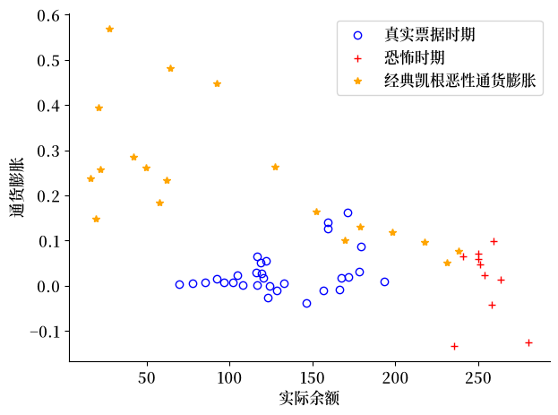
Fig. 5.11 通货膨胀与实际余额#
现在让我们把真实票据时期的通货膨胀对实际余额进行回归，并绘制回归线。
plt.figure()
plt.gca().spines['top'].set_visible(False)
plt.gca().spines['right'].set_visible(False)
# 第一个子样本
plt.plot(bal[1:31], infl[1:31], 'o', markerfacecolor='none',
color='blue', label='真实票据时期')
plt.plot(bal[1:31], a1 + bal[1:31] * b1, color='blue')
# 第二个子样本
plt.plot(bal[31:44], infl[31:44], '+', color='red', label='恐怖时期')
# 第三个子样本
plt.plot(bal[44:63], infl[44:63], '*',
color='orange', label='经典凯根恶性通货膨胀')
plt.xlabel('实际余额')
plt.ylabel('通货膨胀')
plt.legend()
plt.tight_layout()
plt.show()
{kind=link}
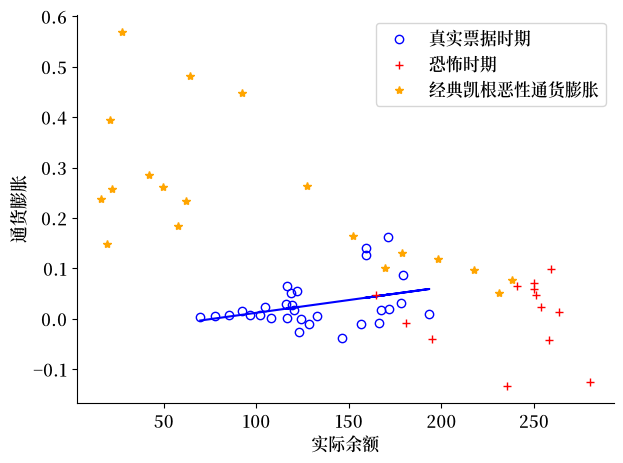
Fig. 5.12 通货膨胀与实际余额#
Fig. 5.12 中的回归线表明，指券（纸币）实际余额的大幅增加，只伴随着价格水平的小幅上涨，这一结果与真实票据理论相符。
在这一时期，指券是对教会土地的债权凭证。
但在这一时期接近尾声时，随着政府继续印制货币却不再出售教会土地，价格水平开始上涨，实际余额开始下降。
为了让人们持有这些纸币，政府通过法律限制手段强制人们持有它。
现在让我们对恐怖时期的实际余额对通货膨胀进行回归，并绘制回归线。
plt.figure()
plt.gca().spines['top'].set_visible(False)
plt.gca().spines['right'].set_visible(False)
# 第一个子样本
plt.plot(bal[1:31], infl[1:31], 'o', markerfacecolor='none',
color='blue', label='真实票据时期')
# 第二个子样本
plt.plot(bal[31:44], infl[31:44], '+', color='red', label='恐怖时期')
plt.plot(a2_rev + b2_rev * infl[31:44], infl[31:44], color='red')
# 第三个子样本
plt.plot(bal[44:63], infl[44:63], '*',
color='orange', label='经典凯根恶性通货膨胀')
plt.xlabel('实际余额')
plt.ylabel('通货膨胀')
plt.legend()
plt.tight_layout()
plt.show()
{kind=link}
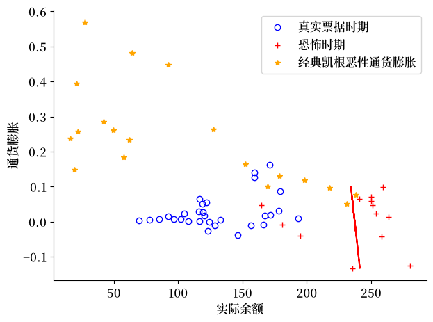
Fig. 5.13 通货膨胀与实际余额#
Fig. 5.13 中的回归线揭示了一个有趣的现象：在恐怖时期，指券（纸币）实际余额的大幅增加，几乎没有带来向上的价格压力，价格甚至还有所下降。
这反映了在恐怖时期，法律限制——即金融抑制——发挥了多么有效的作用。
然而恐怖时期在1794年7月结束了。
这引发了一场大规模的通货膨胀，因为人们开始寻求其他方式来进行交易和储存价值。
接下来的两张图表针对的是经典的恶性通货膨胀时期。
一张图是通货膨胀对实际余额的回归，另一张图是实际余额对通货膨胀的回归。
两者都显示出明显的负相关关系，这正是凯根 [Cagan, 1956] 所研究的恶性通货膨胀的典型特征。
plt.figure()
plt.gca().spines['top'].set_visible(False)
plt.gca().spines['right'].set_visible(False)
# 第一个子样本
plt.plot(bal[1:31], infl[1:31], 'o', markerfacecolor='none',
color='blue', label='真实票据时期')
# 第二个子样本
plt.plot(bal[31:44], infl[31:44], '+', color='red', label='恐怖时期')
# 第三个子样本
plt.plot(bal[44:63], infl[44:63], '*',
color='orange', label='经典凯根恶性通货膨胀')
plt.plot(bal[44:63], a3 + bal[44:63] * b3, color='orange')
plt.xlabel('实际余额')
plt.ylabel('通货膨胀')
plt.legend()
plt.tight_layout()
plt.show()
{kind=link}
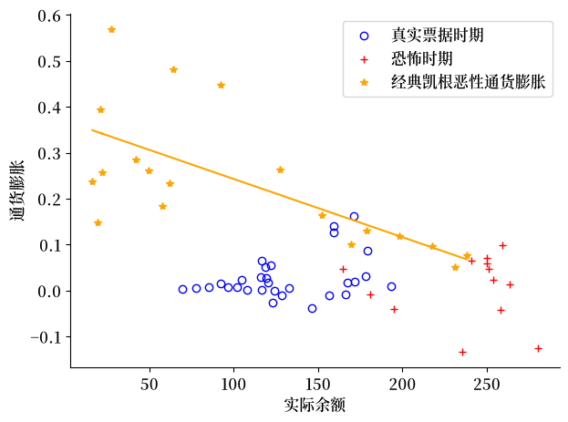
Fig. 5.14 通货膨胀和实际余额#
Fig. 5.14 展示了在恶性通货膨胀时期，将通货膨胀对实际余额进行回归的结果。
plt.figure()
plt.gca().spines['top'].set_visible(False)
plt.gca().spines['right'].set_visible(False)
# 第一个子样本
plt.plot(bal[1:31], infl[1:31], 'o',
markerfacecolor='none', color='blue', label='真实票据时期')
# 第二个子样本
plt.plot(bal[31:44], infl[31:44], '+', color='red', label='恐怖时期')
# 第三个子样本
plt.plot(bal[44:63], infl[44:63], '*',
color='orange', label='经典凯根恶性通货膨胀')
plt.plot(a3_rev + b3_rev * infl[44:63], infl[44:63], color='orange')
plt.xlabel('实际余额')
plt.ylabel('通货膨胀')
plt.legend()
plt.tight_layout()
plt.show()
{kind=link}
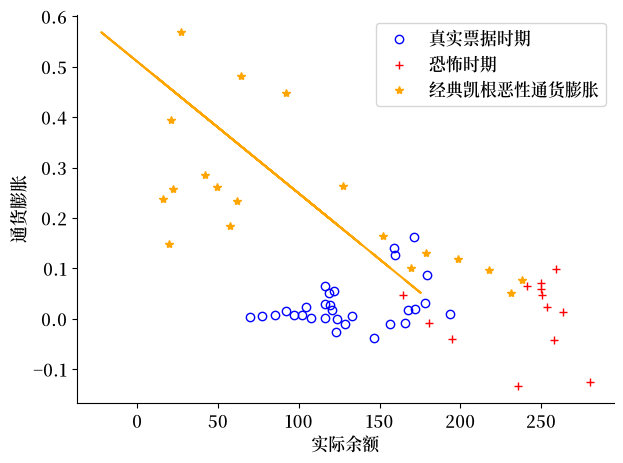
Fig. 5.15 通货膨胀与实际余额#
Fig. 5.14展示了在恶性通货膨胀期间，将实际货币余额对通货膨胀进行回归的结果。
5.6. 恶性通货膨胀的终结#
根据[Sargent and Velde, 1995]的记载，1797年法国革命政府采取了一系列措施来终结通货膨胀：
宣布2/3的国家债务无效，从而
消除了扣除利息后的政府赤字
不再印制货币，而是
改用金银币作为流通货币
1799年，拿破仑·波拿巴就任第一执政。在随后的15年里，他主要依靠从征服地区没收的资源来帮助支付法国政府的开支。
5.7. 理论基础#
本讲为研究通货膨胀理论以及导致通货膨胀的政府货币和财政政策奠定了基础。
在货币主义价格水平理论这一讲中描述了一种货币主义的物价水平理论。
那一讲又为通过货币资助的政府赤字和价格水平和一些不愉快的货币主义算术这两讲奠定了基础。
5.8. 练习#
Exercise 5.1
识别恶性通货膨胀：凯根的50%阈值标准。
本讲中的”注”提示框指出，按照凯根的定义，法国在1795年5月至12月经历了恶性通货膨胀：恶性通货膨胀始于月度通货膨胀率首次超过50%的那个月，并于其后至少连续一年低于50%的第一个月结束。
由于 infl 衡量的是价格水平的对数变化，因此以简单比率表示的50%阈值（即 \(P_{t+1}/P_t - 1 \geq 0.5\)）在 infl 的单位下对应于 \(\log(1.5) \approx 0.405\)。
a. 使用近似的日期网格 pd.date_range(start='1791-01', periods=63, freq='ME')，绘制完整的月度通货膨胀序列 infl[1:]（跳过开头的 NaN），画一条位于50%阈值处的水平虚线，并将超过该阈值的月份标出阴影。
b. 输出超过该阈值的月份数及其大致日期，以检验它们是否与本讲中”1795年5月至12月”的说法相符。
c. 使用本讲中在索引44处（大致对应1794年8月）划定的分界点，计算落在第三个子时期 infl[44:63] 内的凯根式恶性通货膨胀月份有多少个。
Solution to Exercise 5.1
import pandas as pd
dates = pd.date_range(start='1791-01', periods=63, freq='ME')
threshold = np.log(1.5)
fig, ax = plt.subplots(figsize=(10, 4))
ax.plot(dates[1:], infl[1:], color='black', lw=1, label='月度通货膨胀（对数变化）')
ax.axhline(threshold, color='red', linestyle='--', lw=1,
label=f'月度50%阈值（约为 log 1.5 = {threshold:.3f}）')
ax.fill_between(dates[1:], infl[1:], threshold,
where=infl[1:] > threshold,
alpha=0.35, color='red', label='超过凯根阈值')
ax.axvline(pd.Timestamp('1793-07'), color='orange', lw=0.8, linestyle=':',
label='子时期分界线')
ax.axvline(pd.Timestamp('1794-08'), color='orange', lw=0.8, linestyle=':')
ax.set_xlabel('日期')
ax.set_ylabel('月度通货膨胀（对数变化）')
ax.set_title('1791-1796年法国大革命时期的月度通货膨胀')
ax.legend(fontsize=8)
plt.tight_layout()
plt.show()
findfont: Failed to find font weight normal, now using 600.
findfont: Failed to find font weight normal, now using 600.
{kind=link}
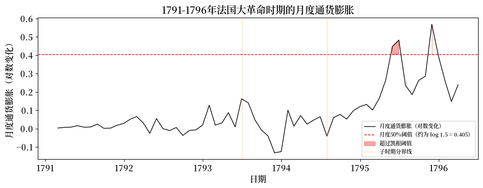
above = np.where(infl > threshold)[0]
print(f'超过月度50%阈值的月份数：{len(above)}')
for idx in above:
print(f' 索引 {idx:3d} 约为 {dates[idx].strftime("%b %Y")} '
f'（通货膨胀 = {infl[idx]:.3f}）')
# 第 c 部分
in_subperiod3 = above[above >= 44]
print(f'\n其中，有 {len(in_subperiod3)} 个月份落在第三个子时期（索引 >= 44）内')
超过月度50%阈值的月份数：3
索引 52 约为 May 1795 （通货膨胀 = 0.447）
索引 53 约为 Jun 1795 （通货膨胀 = 0.482）
索引 58 约为 Nov 1795 （通货膨胀 = 0.569）
其中，有 3 个月份落在第三个子时期（索引 >= 44）内
超过阈值的月份高度集中在1795年，这与本讲中”1795年5月至12月”的说法相符。
所有超过凯根阈值的恶性通货膨胀月份都落在第三个子时期内，这证实了本讲所采用的分界点是对凯根本人标准的一个很好的近似。
Exercise 5.2
从数据中估计凯根货币需求敏感度参数 \(\alpha\)。
凯根的货币需求函数（参见货币主义价格水平理论）意味着实际货币余额与通货膨胀之间存在一种对数线性关系：
本讲对恶性通货膨胀子时期，用 infl 对 bal 进行了线性（水平值）回归，但凯根的理论预测的实际上是对数线性关系。
a. 计算 log_bal = np.log(bal)，使用本讲中定义的 fit 辅助函数，将 log_bal[44:63] 对 infl[44:63] 进行回归，提取斜率 \(b\)，并令 \(\hat\alpha = -b\)。
b. 以 infl[44:63] 为横轴，log_bal[44:63] 为纵轴绘制散点图，然后叠加拟合直线，并标注估计出的 \(\hat\alpha\)。
c. 解释为什么本讲中用 infl 对 bal 进行的水平值回归得到的斜率 \(b_3\)，相比于（a）中的对数线性设定，与凯根模型的吻合程度更低，并指出在恶性通货膨胀期间使用水平值 bal 会带来什么样的扭曲。
d. 将（a）中得到的 \(\hat\alpha\) 与本讲货币主义价格水平理论中使用的默认值 \(\alpha = 5\) 进行比较，评估二者的数量级是否一致。
Solution to Exercise 5.2
log_bal = np.log(bal)
# 拟合 log_bal = a + b * infl。
a_log, b_log = fit(infl[44:63], log_bal[44:63])
α_hat = -b_log
print(f'对数线性估计值：alpha_hat = {α_hat:.2f}')
print(f'cagan_ree 中的默认值：α = 5.00')
对数线性估计值：alpha_hat = 3.75
cagan_ree 中的默认值：α = 5.00
infl_grid = np.linspace(infl[44:63].min(), infl[44:63].max(), 100)
fig, ax = plt.subplots()
ax.scatter(infl[44:63], log_bal[44:63],
marker='*', color='orange', s=60, label='数据（恶性通货膨胀期）')
ax.plot(infl_grid, a_log + b_log * infl_grid,
color='orange', lw=2,
label=fr'对数线性拟合：$\hat{{\alpha}} = {α_hat:.1f}$')
ax.set_xlabel('月度通货膨胀率 $\\pi_t$')
ax.set_ylabel('$\\log($实际余额$)$')
ax.set_title('凯根货币需求 - 恶性通货膨胀时期')
ax.legend()
plt.tight_layout()
plt.show()
{kind=link}
第 c 部分： 凯根的模型假定，随着通货膨胀率上升，实际余额呈指数下降，即 \(M/p = e^{c - \alpha\pi}\)。
在恶性通货膨胀期间，实际余额的变化幅度可达数量级之巨，因此用 infl 对 bal 进行线性拟合是一种较差的整体近似，因为它把一条本质上是指数曲线的关系强行拟合成一条直线。
先取对数会使这种关系变为线性，从而使回归在数据的整个范围内都具有良好的设定。
第 d 部分： \(\hat\alpha\) 应处于3到6之间，这与货币主义价格水平理论中默认的 \(\alpha = 5\) 相一致，证实了同一模型应用于18世纪法国数据所得到的参数值，与20世纪恶性通货膨胀案例所得到的参数值处于相近的数量级。
Exercise 5.3
三种货币制度的单图呈现。
本讲通过五张独立的散点图展示了三种货币制度。
在此，你将把它们综合为一张图，使这些相互对照的理论在视觉上一目了然。
请绘制一张图，包含全部三组散点云（蓝色圆圈、红色加号、橙色星号），并为每组散点云绘制一条回归线，使用本讲中已经计算好的系数：
真实票据（索引1:31）：绘制回归线
infl = a1 + b1 * bal（理论认为，有担保的实际余额不断增长，只会伴随温和的通货膨胀）。恐怖时期（索引31:44）：由于法律限制中止了正常的货币需求关系，请绘制反向回归
bal = a2_rev + b2_rev * infl，将其表示为infl的函数。这在(bal, infl)空间中会得到一条几乎水平的直线，说明实际余额在很大程度上是被强制维持在大致固定水平的，而与通货膨胀无关。恶性通货膨胀（索引44:63）：绘制
infl = a3 + b3 * bal（这是经典的凯根负斜率关系，因为更高的通货膨胀伴随着更低的实际余额）。
绘制好图之后，用2-3句话解释为什么恐怖时期的回归线方向与另外两个时期不同。
Solution to Exercise 5.3
fig, ax = plt.subplots(figsize=(8, 6))
# 真实票据
ax.plot(bal[1:31], infl[1:31], 'o', markerfacecolor='none',
color='blue', label='真实票据（1791-1793年）')
bal_grid1 = np.linspace(bal[1:31].min(), bal[1:31].max(), 100)
ax.plot(bal_grid1, a1 + b1 * bal_grid1, color='blue', lw=2)
# 恐怖时期
ax.plot(bal[31:44], infl[31:44], '+', color='red', ms=9,
label='恐怖时期（1793-1794年）')
infl_grid2 = np.linspace(infl[31:44].min(), infl[31:44].max(), 100)
ax.plot(a2_rev + b2_rev * infl_grid2, infl_grid2, color='red', lw=2)
# 恶性通货膨胀
ax.plot(bal[44:63], infl[44:63], '*', color='orange', ms=8,
label='恶性通货膨胀（1794-1796年）')
bal_grid3 = np.linspace(bal[44:63].min(), bal[44:63].max(), 100)
ax.plot(bal_grid3, a3 + b3 * bal_grid3, color='orange', lw=2)
ax.set_xlabel('实际余额（百万里弗）')
ax.set_ylabel('月度通货膨胀率')
ax.set_title('法国大革命时期的三种货币制度')
ax.legend(fontsize=9)
plt.tight_layout()
plt.show()
findfont: Failed to find font weight normal, now using 600.
{kind=link}
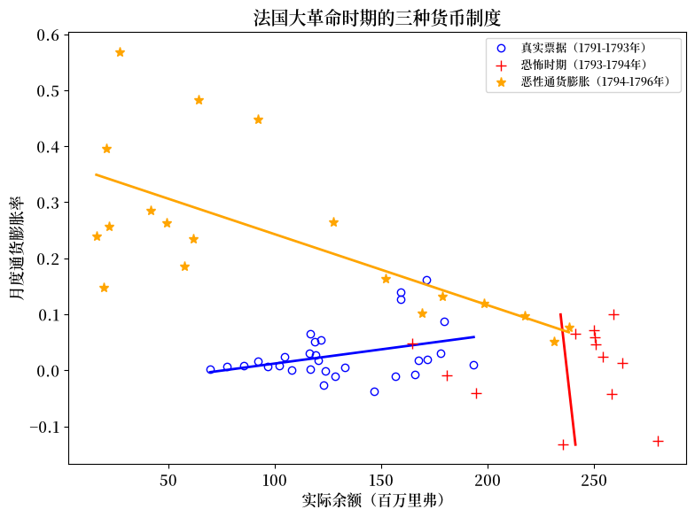
在恐怖时期，公共安全委员会实施了法律限制措施，包括对拒绝接受指券者处以死刑，从而迫使公民持有高额实际余额，而不论物价上涨的速度有多快。
这打破了正常的货币需求关系，因为实际余额是由政府法令决定的，而不是由通货膨胀决定的。
将 bal 对 infl 进行回归，并将结果绘制为一条几乎水平的直线，正反映了这种因果方向的改变。
在恐怖时期，通货膨胀率发生了大幅波动，但实际余额几乎没有变动。
相比之下，真实票据时期和恶性通货膨胀时期的散点云都符合这样一种理论：实际余额是由公众自主选择的，因而会对通货膨胀作出反应。